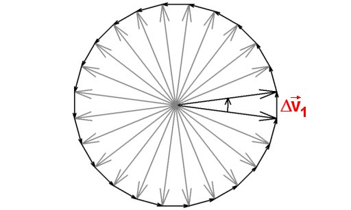

- Fig. 1
- Interacţionează cele două pietre?
|
- Fig. 2
- Pământul însuşi este o mare aglomerare de roci.
|
- Fig. 3a
- Experimentul Cavendish. (schiţă simplificată)
|
- Fig. 3b
- Experimentul Cavendish. (vedere de ansamblu asupra dispozitivului)
|
- Fig. 4
- Forţele atracţiei gravitaţionale dintre două corpuri.
|
- Fig. 5
- Luna se roteşte în jurul Pământului.
 « Simulare interactivă
« Simulare interactivă
|
- Fig. 6
- Atracţia gravitaţională exercitată de Pământ asupra Lunii determină curbarea traiectoriei acesteia.
|
- Fig. 7
- Viteza Lunii nu este un vector constant!
|

- Fig. 8
- Diagrama vitezelor instantanee ale Lunii pentru o rotaţie completă a acesteia în jurul Pământului.
|
- Fig. 9
- Pământul interacţionează gravitaţional cu alte corpuri ca şi când masa sa ar fi concentrată în centrul acestuia.
|